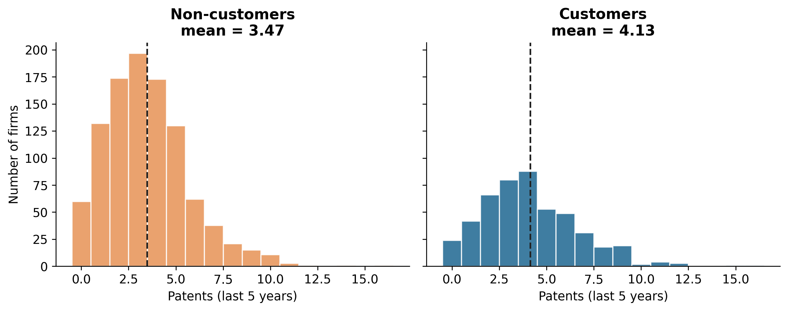
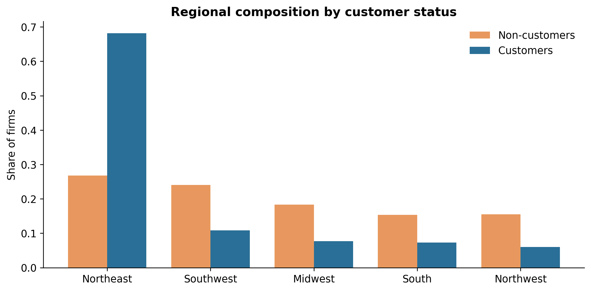
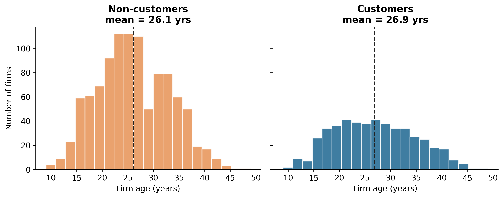
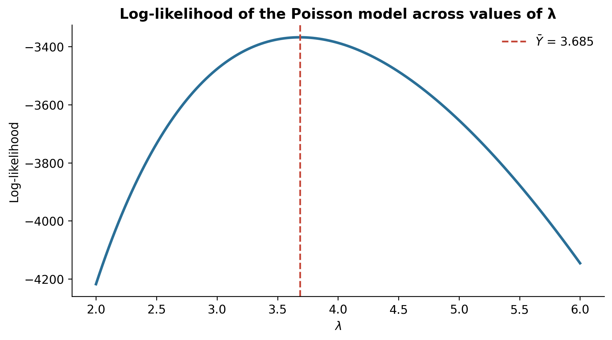

Poisson Regression and Maximum Likelihood Estimation
A Case Study of Blueprinty’s Software and Patent Awards
Author
Dongjun Wang
Published
May 20, 2026
Introduction
Blueprinty is a small software company that builds tools to help engineering firms draft the blueprints they submit alongside patent applications to the US Patent Office. Its pitch is simple and appealing — firms that use our software get more of their patents approved — and the marketing team would love to put a number on that claim. The trouble is that the ideal data does not exist: we would want each firm’s patent success rate before and after adopting Blueprinty, but no such record is available. Instead we have a cross-section of 1,500 mature (non-startup) engineering firms, recording each firm’s number of patents awarded over the last five years, its region, its age since incorporation, and whether it is a Blueprinty customer.
This makes the claim surprisingly hard to evaluate, because customers were not chosen at random — firms decided for themselves whether to buy. If those firms also happen to be older or clustered in more patent-active regions, a raw difference in patent counts would tell us about who buys the software rather than what it does. To separate the two we need a model that holds those characteristics fixed. This post builds one from the ground up: starting from the Poisson distribution, we derive its likelihood, estimate it by hand, extend it into a regression, and finally translate the result into a number the marketing team can use.
Exploring the Data
Setup and data loading
import numpy as npimport pandas as pdimport matplotlib.pyplot as pltimport matplotlib as mplfrom scipy.optimize import minimizefrom scipy.special import gammalnimport statsmodels.api as smfrom great_tables import GT, md# Plot stylingmpl.rcParams.update({"font.size": 11,"axes.spines.top": False,"axes.spines.right": False,"axes.titleweight": "bold","figure.dpi": 120,})C_CUST ="#2A6F97"# customersC_NON ="#E8985E"# non-customersdf = pd.read_csv("blueprinty.csv")df.head()
patents
region
age
iscustomer
0
0
Midwest
32.5
0
1
3
Southwest
37.5
0
2
4
Northwest
27.0
1
3
3
Northeast
24.5
0
4
3
Southwest
37.0
0
We begin with the outcome: the number of patents awarded to each firm. The two histograms below compare its distribution for customers and non-customers on a shared x-axis, with dashed lines marking each group mean.

Figure 1: Distribution of patents over the last five years, by customer status. Dashed lines mark group means.
Customers do average more patents — about 4.13 versus 3.47 — but the gap is modest, and both distributions share the right-skewed shape typical of count data. On its own this difference is suggestive, not conclusive. The more important point is that the two groups are not otherwise comparable: because firms self-select into Blueprinty, we must ask whether they differ in ways that also affect patenting. Two candidates stand out — where a firm is located, and how old it is.

Figure 2: Regional composition of customers versus non-customers. Customers are heavily concentrated in the Northeast.
The regional picture is striking. Non-customers are spread fairly evenly across the country, but customers are overwhelmingly concentrated in the Northeast — roughly two-thirds of them versus about a quarter of non-customers. If the Northeast is more patent-active for reasons unrelated to Blueprinty, some of the raw patent advantage above is really a regional effect in disguise.

Figure 3: Distribution of firm age by customer status. Dashed lines mark group means.
Firm age tells a similar story: the two distributions overlap heavily but are not identical. Age matters for patenting in its own right — very young firms have not had time to build a portfolio, while very old firms may have slowed down — so we expect patenting to rise with age and then flatten or fall.
The takeaway is the central challenge of the analysis: customers out-patent non-customers in the raw data, but they also differ in region and age, exactly the variables that could drive patenting on their own. Any honest estimate of Blueprinty’s effect must control for these differences — which is precisely what a Poisson regression lets us do.
A Simple Poisson Model via Maximum Likelihood
Our outcome is a count — patents awarded over five years — and counts have two features that make the Normal distribution a poor fit: they cannot be negative, and they must be whole numbers. The natural starting point is instead the Poisson distribution, which puts probability only on \(0, 1, 2, \dots\) and is governed by a single rate parameter \(\lambda\) equal to its own mean. Before adding predictors, it is worth seeing how we would estimate that single \(\lambda\), since everything that follows is just a richer version of the same idea.
For a single observation, the Poisson probability mass function is
If we assume the \(n\) firms are independent and identically distributed, the likelihood of the whole sample is the product of the individual densities:
Products are awkward to differentiate, so we work with the log-likelihood instead. Taking logs turns the product into a sum, and the log of each term splits cleanly into three pieces:
The last term does not involve \(\lambda\), so it has no bearing on which\(\lambda\) maximizes the function — but we keep it so the numerical value is correct. The code is a direct translation (using gammaln, since \(\log(Y!) = \log\Gamma(Y+1)\), which is stable for large counts):
def poisson_loglikelihood(lam, Y):"""Log-likelihood for Y ~ Poisson(lambda)."""if lam <=0:return-np.infreturn np.sum(-lam + Y * np.log(lam) - gammaln(Y +1))
Because there is only one parameter, we can simply evaluate the log-likelihood over a grid of candidate \(\lambda\) values and plot it. The observed patent counts are held fixed as the data; only \(\lambda\) varies.
lam_grid = np.linspace(2, 6, 300)ll_vals = [poisson_loglikelihood(l, Y) for l in lam_grid]lam_at_peak = lam_grid[int(np.argmax(ll_vals))]

Figure 4: The Poisson log-likelihood as a function of λ. The peak sits exactly at the sample mean of patents.
The curve is a smooth hill with a single peak, and reading the MLE off it just means finding the \(\lambda\) beneath the top — which lines up exactly with the sample mean (dashed line). This is no coincidence. Differentiating the log-likelihood and setting it to zero confirms it:
The MLE is simply the sample mean. This “feels right” because the mean of a Poisson distribution is\(\lambda\): the most likely rate to have generated the data is the average count we observed.
The regression to come has no closed-form solution, so it is worth confirming that a numerical optimizer recovers the right answer here, where we already know it. We minimize the negative log-likelihood (optimizers minimize by convention):
res = minimize(lambda l: -poisson_loglikelihood(l[0], Y), x0=[1.0], method="Nelder-Mead")lambda_hat = res.x[0]print(f"Numerical MLE : {lambda_hat:.5f}")print(f"Sample mean : {Y.mean():.5f}")
Numerical MLE : 3.68467
Sample mean : 3.68467
The optimizer lands on essentially the sample mean, differing only in the last digits — the residue of a search that stops once it is “close enough.” This gives us confidence in the machinery before pointing it at a problem we cannot solve by hand.
Poisson Regression
A single \(\lambda\) assumes every firm patents at the same underlying rate, which is exactly the assumption we argued against in the data-exploration section. We now let the rate vary from firm to firm as a function of its characteristics:
Here \(X_i\) is a row of covariates (age, region, customer status) and \(\beta\) the coefficient vector we want to estimate. Why wrap the linear predictor in an exponential? Because \(\lambda_i\) must be strictly positive while \(X_i'\beta\) can be any real number; the exponential is the standard inverse link mapping any real number to a positive one, guaranteeing a valid rate whatever the coefficients.
The log-likelihood is the same as before, except \(\lambda\) is now firm-specific and built from \(X\) and \(\beta\). Substituting \(\lambda_i = \exp(X_i'\beta)\):
def poisson_regression_loglikelihood(beta, Y, X):"""Log-likelihood for Y_i ~ Poisson(exp(X_i'beta)).""" eta = np.clip(X @ beta, -30, 30) # clip guards against overflow in exp lam = np.exp(eta)return np.sum(-lam + Y * eta - gammaln(Y +1))
We assemble \(X\) with an intercept, firm age and age squared, region indicators, and the binary customer flag. Two choices deserve a word. We include age squared because the age–patenting relationship is unlikely to be linear: firms tend to ramp up and then plateau, and a quadratic term captures that curvature. And we drop one region (the Midwest, our baseline) because with an intercept in the model a full set of five dummies would be perfectly collinear and the model unidentified; each region coefficient is therefore read relative to the Midwest.
We maximize the log-likelihood with scipy.optimize.minimize. Standard errors come from the Hessian — the matrix of second derivatives, which measures the curvature of the likelihood at its peak: a sharp peak pins the parameter down tightly (small SE), a flat one does not. The standard errors are the square roots of the diagonal of the negative inverse Hessian, which for the Poisson model has the clean analytic form \(X'\,\text{diag}(\lambda)\,X\) that we use for precision:
beta0 = np.zeros(X_mat.shape[1])beta0[0] = np.log(Y.mean()) # sensible starting value for the interceptopt = minimize(lambda b: -poisson_regression_loglikelihood(b, Y, X_mat), beta0, method="BFGS")beta_hat = opt.x# Standard errors from the (negative) Hessian of the log-likelihoodlam_hat = np.exp(X_mat @ beta_hat)hessian = X_mat.T @ (X_mat * lam_hat[:, None])se_hat = np.sqrt(np.diag(np.linalg.inv(hessian)))
The table below presents the estimated coefficients with their standard errors.
Table 1
Poisson Regression Coefficients
Maximum likelihood estimates (hand-coded, Hessian-based SEs)
Estimate
Std. Error
Intercept
−0.5100
0.1832
Age
0.1487
0.0139
Age²
−0.0030
0.0003
Region: Northeast
0.0292
0.0436
Region: Northwest
−0.0176
0.0538
Region: South
0.0566
0.0527
Region: Southwest
0.0506
0.0472
Customer (Blueprinty)
0.2076
0.0309
Baseline region is the Midwest. n = 1,500 firms.
A good way to validate a hand-rolled estimator is to fit the identical model with a trusted library. We use statsmodels’ GLM with a Poisson family and compare:
The two approaches agree to several decimal places
Coefficients
Standard Errors
Coef (MLE)
Coef (GLM)
SE (MLE)
SE (GLM)
Intercept
−0.5100
−0.5089
0.1832
0.1832
Age
0.1487
0.1486
0.0139
0.0139
Age²
−0.0030
−0.0030
0.0003
0.0003
Region: Northeast
0.0292
0.0292
0.0436
0.0436
Region: Northwest
−0.0176
−0.0176
0.0538
0.0538
Region: South
0.0566
0.0566
0.0527
0.0527
Region: Southwest
0.0506
0.0506
0.0472
0.0472
Customer (Blueprinty)
0.2076
0.2076
0.0309
0.0309
The two sets of estimates line up almost perfectly: coefficients identical to several decimal places, standard errors very close. The tiny discrepancies come from our SEs relying on a numerically-evaluated Hessian, whereas statsmodels uses its own iteratively-reweighted-least-squares routine — far too small to change any conclusion. The agreement confirms our from-scratch implementation is correct.
Because the model is multiplicative — \(\lambda_i = \exp(X_i'\beta)\) — each coefficient acts through exponentiation, so \(\exp(\beta)\) is the multiplicative change in expected patents for a one-unit increase in that predictor, all else fixed.
Age is positive and age squared negative, together tracing the hump-shaped pattern we anticipated: patenting rises with firm age, then bends back down. The significant quadratic term confirms a straight line would have been a mistake. The regional coefficients (relative to the Midwest) are all small and imprecise — once age is accounted for, region adds little.
The coefficient of greatest interest, customer status, is positive and comfortably larger than its standard error. Its sign matches Blueprinty’s claim, and since \(\exp(0.2076) \approx 1.23\), it implies customers patent at roughly 23% higher a rate than otherwise comparable non-customers. The next section turns this multiplicative figure into something more tangible.
The Effect of Blueprinty’s Software
The customer coefficient is convincing, but “a 23% higher rate” is hard to act on, and reading the raw coefficient as “additional patents” is wrong — because the model is multiplicative, the same coefficient means more extra patents for a prolific firm than a modest one. For an interpretable answer we use a counterfactual approach: ask the fitted model what each firm would produce as a non-customer versus a customer, and average the difference. We build two copies of \(X\) — \(X_0\) with every customer flag set to 0, \(X_1\) with every flag set to 1 — leaving age and region at each firm’s real values, then predict and take the average gap.
ic = col_names.index("iscustomer")X0 = X_mat.copy(); X0[:, ic] =0# everyone a non-customerX1 = X_mat.copy(); X1[:, ic] =1# everyone a customery0 = np.exp(X0 @ beta_hat)y1 = np.exp(X1 @ beta_hat)avg_effect = np.mean(y1 - y0)print(f"Average effect of being a Blueprinty customer: "f"{avg_effect:.3f} additional patents over 5 years")
Average effect of being a Blueprinty customer: 0.793 additional patents over 5 years
Averaged across all 1,500 firms, holding each firm’s age and region fixed, the model attributes roughly 0.79 additional patents over five years to being a Blueprinty customer — about three-quarters of an extra patent against a baseline of fewer than four, a meaningful uplift.
It is worth being precise about what this does and does not establish. The analysis provides evidence consistent with Blueprinty’s claim: controlling for age and region, customers are predicted to patent more, and the relationship is robust. But this is an observational study, not a randomized experiment. Firms chose whether to adopt the software, and we cannot rule out unmeasured differences — managerial ambition, R&D intensity, invention complexity — that could drive both the purchase decision and patenting. Controlling for age and region narrows the alternative explanations considerably but cannot close them entirely. The honest conclusion: the data are encouraging for Blueprinty’s case, while a clean causal claim would require an experiment or richer data on the firms themselves.